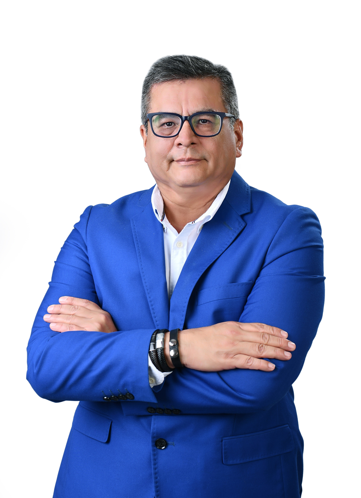

Docente universitario
Profesor de los cursos Microeconomía, Macroeconomía, Negocios Internacionales, Desarrollo de Emprendedores
Candidato a Director
Profesor de Economía · ITCR Sede San Carlos
Más de 26 años formando profesionales con visión crítica y compromiso regional. Investigador activo, líder académico y candidato a Director del Campus Tecnológico Local de San Carlos.

Trayectoria Académica
Una trayectoria marcada por la excelencia docente, la investigación aplicada y el compromiso con la comunidad universitaria.
Propuesta de Dirección — Campus San Carlos (ITCR)
Un modelo de gestión estratégica fundamentado en el desarrollo territorial y la competitividad de la Zona Norte, articulando la academia con los sectores productivos y la comunidad.
Alineación estratégica de la oferta académica, investigación y extensión con las demandas reales y sectores estratégicos de la Zona Norte:
Consolidación de un ecosistema de trabajo sinérgico entre escuelas, departamentos y áreas del conocimiento para abordar problemas complejos:
Posicionamiento de la Dirección como un puente integrador que une voluntades, capacidades y recursos a nivel interno y externo:
Logros proyectados a través de esta articulación continua
Generación de patentes, proyectos I+D y transferencia directa de conocimiento que impulsen la modernización tecnológica regional.
Aporte de respuestas técnicas y socioeconómicas concretas a problemáticas de los cantones de la Zona Norte.
Formación de profesionales de alta demanda, con visión crítica y capacidad inmediata de integrarse a la fuerza laboral.
Trayectoria de Liderazgo
2023
Municipalidad de San Carlos
Impartición de talleres de finanzas personales para pequeños empresarios de la zona.
2022
COOPELESCA R.L.
Consultoría sobre estrategias de desarrollo económico local sostenible.
2019
Sede Regional Huetar Norte
Coordinación y gestion de proyectos para el beneficio de la sede huetar norte.
2014
Sede Regional Huetar Norte
Contribuciones activa en distintos proyectos para el beneficio de la sede huetar norte.
2008
INA ASEMINA
Fiscal de la Junta Directiva de la Asociación Solidarista de Empleado del INA ASEMINA..
Respaldo a la Candidatura
Docentes, líderes y miembros de la comunidad comparten sus razones y convicciones para apoyar al Dr. Alfredo Elías Alfaro Ramos a la Dirección del Campus Tecnológico Local San Carlos.
Comparte su testimonio sobre la trayectoria académica, capacidad de gestión y compromiso del Dr. Alfredo Alfaro con la sede regional.
Resalta el liderazgo integrador, la visión institucional y la cercanía del Dr. Alfaro con toda la comunidad universitaria.
Enfatiza la solvencia académica, la integridad profesional y la experiencia para liderar el desarrollo del campus.
Expresa su respaldo a la candidatura destacando los valores éticos, la articulación de esfuerzos y la visión de futuro para San Carlos.
Videos y Ponencias
El Dr. Alfredo Elías Alfaro Ramos comparte análisis y propuestas sobre economía regional, innovación y reactivación productiva.
Análisis y estrategias económicas orientadas a fortalecer las pequeñas y medianas empresas frente a los desafíos productivos y de mercado.
Presentación de investigación aplicada sobre el valor del capital intelectual en la transformación de los modelos de negocio del sector manufacturero.
Evaluación del impacto socioeconómico generado por la pandemia y alternativas de recuperación para los sectores productivos.
¿Deseas conocer más iniciativas y proyectos? Contáctanos aquí.
Contribuciones al conocimiento en economía y desarrollo regional
"Marketing Digital para la Internacionalización en las pequeñas y medianas empresas: Una revisión"
RAN (Revista Academia & Negocios - Chillán), 10(2), 280–294.
Revista Tecnología En Marcha, 37(1), 163–171.
TEC Empresarial, 16(2), 18–33.
Revista Nacional de Administración, 13(1), e4058.
"Red de colaboración en horticultura protegida de la Región Huetar Norte"
Instituto Tecnológico de Costa Rica.
"Capital intelectual e innovación en las empresas"
Revista Ventana, 11(1), 38–39.
Estoy disponible para consultas, colaboraciones académicas y propuestas de la comunidad universitaria del Campus San Carlos.
Dr. Alfredo Elías Alfaro Ramos
Profesor de Economía
Candidato a Director del Campus Tecnológico Local de San Carlos